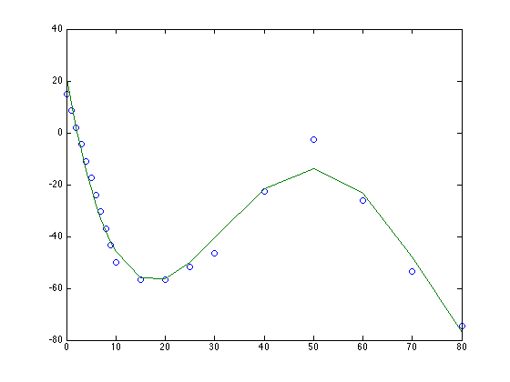

Contents
function [ output_args ] = untitled( input_args )
clear
Plot Altitude and Temperature
alt = [0 1 2 3 4 5 6 7 8 9 10 15 20 25 30 40 50 60 70 80]; temp = [15 8.5 2 -4.49 -10.98 -17.47 -23.96 -30.45 -36.94 -43.42 -49.90 -56.50 -56.50 -51.60 -46.64 -22.8 -2.5 -26.13 -53.57 -74.51]; P = polyfit(alt, temp, 4) f = polyval(P,alt); plot(alt, temp,'o',alt,f,'-')
P =
0.0000 -0.0073 0.4799 -10.8668 21.6898
 i = trapz(P(1)*alt.^3+P(2)*alt.^2+P(3)*alt+P(4))
i = -108.6029
end